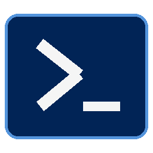

Windows PowerShell─ □ ×Windows PowerShell
Copyright (C) Microsoft Corporation. All rights reserved.
PS C:\Users\You> open example.com_
Your browser starts at a real command prompt.
Example Domain
Websites render normally.
Your controls live in the console.
[12:00:01] ready Example Domain
PS C:\Users\You> _
THE THREE THINGS TO REMEMBEREnterType a website or a search
example.com or search cats
Ctrl + LToggle between your page and the prompt.
Press it again to get back to your tab.
F8Hide pages behind a clean PowerShell prompt.
Your tabs stay open.
Try help, split example.com, workspace save work, snapshot, or note.